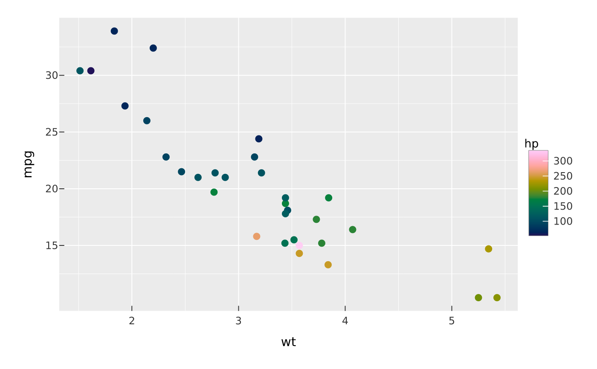
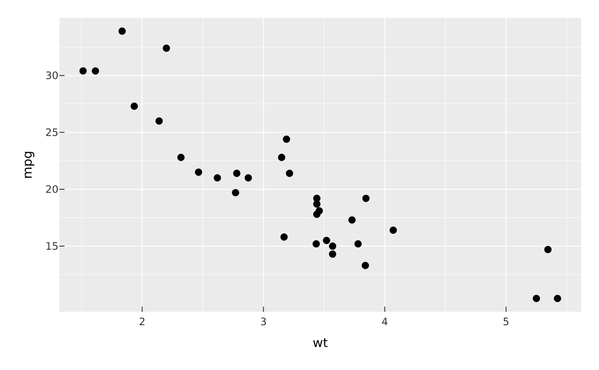

Each mark_*() appends a drawing layer to a PlotSpec. Encodings are bare
column names (or expressions) captured with tidy evaluation, e.g.
x = wt, y = mpg, color = hp. Scalar values (e.g. size = 3,
color = "red") are treated as constant aesthetics rather than data
mappings.
Usage
mark_point(
plot,
...,
size = NULL,
shape = NULL,
position = "identity",
auto = FALSE,
seed = NULL,
blend = NULL,
effects = list(),
sketch = NULL,
data = NULL
)
mark_line(
plot,
...,
window = NULL,
auto = FALSE,
blend = NULL,
effects = list(),
sketch = NULL,
data = NULL
)
mark_rule(
plot,
...,
blend = NULL,
effects = list(),
sketch = NULL,
data = NULL
)
mark_bar(
plot,
...,
position = "stack",
blend = NULL,
sketch = NULL,
data = NULL
)Arguments
- plot
- ...
Encodings: named channel expressions such as
x,y,color,fill,size,shape,alpha. Stroked marks (line, step, segment, rule, linerange) also takelinewidthandlinetype.- size, shape
Convenience arguments for the point size (in mm) / shape; may be a constant or a mapped expression. A shape is a built-in marker (
"circle","square","triangle","diamond","plus","cross","triangle_down","star") or an SVG icon — a pathdstring or a.svgfile — drawn as a crisp vector marker. Use a literal string for a constant icon, or mapshapeand pass icons toscale_shape().- position
Position adjustment: a string —
"identity"(default),"jitter"/"jitterdodge"(points),"stack"/"fill"/"dodge"/"dodge2"(bars),"nudge"— or a parameterisedposition_jitter()/position_dodge()/position_dodge2()/position_jitterdodge()/position_nudge()object.- auto
For
mark_point(),mark_line(),mark_step(),mark_segment(), andmark_edges(), whenTRUEand the layer has very many rows, automatically render it as a datashaded density raster (seemark_datashade()) instead of individual vector marks: points bin into a density grid (vellum::datashade()), dense lines/steps rasterise as connected polylines (vellum::datashade_lines()), and segments/edges as independent segments (vellum::datashade_segments()). The datashaded line/segment output isdynspread-ed so thin marks stay visible (see thespreadargument ofmark_datashade()). The fallback is skipped under a warped coordinate system (coord_polar()/coord_trans()), which draws the vector marks instead.- seed
For
mark_point(position = "jitter"), an optional integer seed making the jitter reproducible. The global RNG stream is restored afterwards.- blend
Optional blend mode for compositing this layer against what is already drawn beneath it (the panel and earlier layers), one of the CSS
mix-blend-modenames, e.g."multiply","screen","darken". The whole layer composites as one isolated group (not per element).- effects
A list of layer render effects applied to the mark at draw time —
glow(),outline(), andshadow(). Available on stroked and point marks.- sketch
A
sketch()spec giving this layer a hand-drawn look (wobbly outlines, hachure fills),NA/FALSEto force it crisp (overriding a plot-widetheme_sketch()), orNULL(default) to inherit. Geometry marks accept it; text, raster, hex and datashade marks do not.- data
Optional layer data frame; overrides the plot data for this layer.
- window
For
mark_line(), an optional window (rolling / cumulative / offset) transform ofycomputed per group over rows ordered byx, before the line is drawn. Either an op name ("mean","sum","median","min","max","cumsum","cummean","cummax","cummin","lag","lead","rank") or a listlist(op=, k=, align=, partial=):kis the window size (rolling; default 7) or shift (lag/lead; default 1),alignis"right"(trailing, default),"left", or"center", andpartial(defaultTRUE) computes at the edges from the shorter available window. For examplewindow = list(op = "mean", k = 7)is a 7-point trailing average.
Value
The modified PlotSpec.
Details
mark_bar() draws bars from a zero baseline. With an explicit y it uses the
y values as heights; with no y it counts rows per category (the "count"
stat). When color/fill is mapped, grouped bars are stacked by default; use
position = "dodge" for side-by-side bars or "fill" to normalise to 1.
Interactivity
Any mark accepts reserved, per-row arguments (captured like encodings, via tidy evaluation) that make its elements addressable — and stylable — by an interactive host without changing what a static render draws:
data_id— a per-element data key (e.g.data_id = model). Emitted by the SVG backend asdata-keyon each element and returned byvellum::scene_model(); it is the join key a host uses to map a hover/click back to a datum, and to link the same datum across views.tooltip— per-element tooltip text (a column expression or a constant), surfaced inscene_model()metadata.hover_group— a field grouping elements for linked emphasis (consumed by a host in a later phase).hover_color,selected_color— per-element outline colours applied by the host when the element is hovered / selected (a constant, or mapped from a column so different marks highlight differently). They override the widget-wide theme set byvellumwidget::as_widget(hover_color=, selected_color=).
These are inert for PNG/PDF and for an SVG opened without a JS host: a plot
with none of them compiles and renders exactly as before. Declaring any of them
without data_id defaults the key to the row index, so the element is still
addressable. They currently apply to stat = "identity" marks (points, bars,
tiles, segments, edges, hexbins, sf features, …); aggregating stats
(histogram/count/density) drop them, since rows no longer map 1:1 to elements.
How these flow into the vellum scene (the scene_model() element table, the
SVG data-key / data-vellum-* attributes, and the reserved meta key
vocabulary) is described in vellum's "The scene contract" vignette
(vignette("scene-contract", package = "vellum")).
Examples
vplot(mtcars) |> mark_point(x = wt, y = mpg, color = hp)

# Declare interactivity (inert on a static render):
df <- data.frame(wt = mtcars$wt, mpg = mtcars$mpg, model = rownames(mtcars))
vplot(df) |> mark_point(x = wt, y = mpg, tooltip = model, data_id = model)
